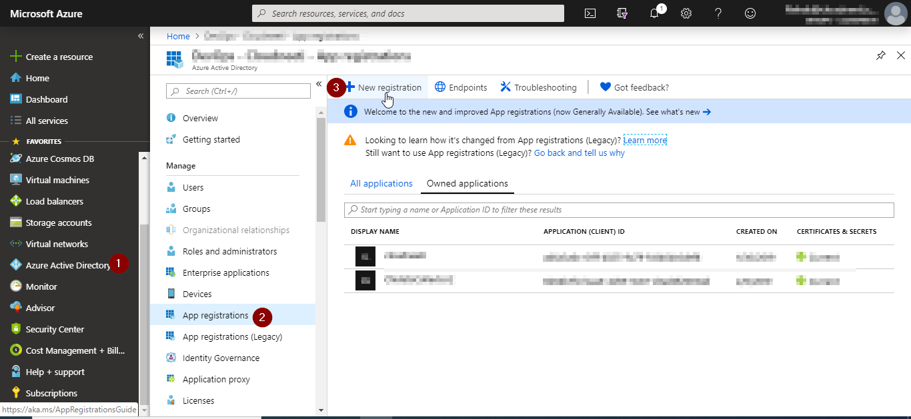

Azure Subscription Onboarding Guide
Onboarding Steps
The following steps are required to onboard Microsoft Azure to the Cloudneeti application.

-
Registering the Cloudneeti application includes registering the Cloudneeti application with Azure tenant, providing access to Microsoft Graph and granting admin consent to the Cloudneeti application.
-
Granting access to the Azure subscription includes giving the Cloudneeti application reader access to the Azure subscription and collecting Subscription ID, Directory ID, Domain Name information.
-
Grant access to Azure subscription additional roles (Optional) includes giving the Cloudneeti application access to the Azure subscription, assigning Azure custom role.
-
Custom role with permission "Microsoft.Web/sites/config/list/action" for Azure Subscription level scope. The Cloudneeti application needs "Microsoft.Web/sites/config/list/action" action present in Website Contributor role in order to collect authentication and authorization configuration of Web/API/Mobile/Function Apps which is hosted on the App Service Plan. The current subscription Reader role given doesn't have sufficient permissions to collect web site configuration details.
-
Custom role with permission "Microsoft.Storage/storageAccounts/listkeys/action" for Azure Subscription level scope. Cloudneeti needs "Microsoft.Storage/storageAccounts/listkeys/action" action present in Storage Account Contributor role in order to collect metadata configuration of blobs. The current subscription Reader role given doesn't have sufficient permissions to list blob keys.
-
-
Grant access to key vaults (Optional) includes giving the Cloudneeti application special permission on desired key vaults to get policy data related to secrets.
-
Advanced Security configurations (Optional) includes adding a script to the customer’s Azure account and granting the required access rights.
Advanced security configurations (step 5) requires a Cloudneeti PowerShell agent to be installed in an Azure subscription under the same tenant where the Azure subscription is located. The Cloudneeti PowerShell agent retrieves (A) additional configuration information from the Azure Active Directory (there are no Azure APIs to retrieve this information) and pushes (B) this information as a JSON file to the Cloudneeti application.
-
Enable Azure Security Center audit policies (Optional) includes enabling Azure Security Center audit policies (Optional) includes configuring Azure Security Center free tier in order for Zscaler CSPM to pull all security recommendations and make it available within the product.
- Note : Please note that it is not required to have Azure Defender enabled (ASC Standard tier).
-
Configure OS baseline and Vulnerability Assessment Solution (Optional) inlcudes connecting VMs to OMS workspace. Also deploy partner Vulnerability Assessment Solution in Azure Security Center and installing the solution on multiple VMs allows to provide visibility into missing updates, misconfigured OS security settings, endpoint protection status, and health and threat protection.
-
Configure Cloudneeti agent on AKS, AKS Engine and VM Based Kubernetes Clusters (Optional) inlcudes Deploying Cloudneeti agent on Azure Kubernetes Service enables compliance monitoring of Azure Kubernetes Clusters - AKS, AKS-Engine and VM hosted Kubernetes Clusters. An Azure docker agent is deployed to collect data for additional security policies.
-
Adding Azure subscription includes adding Azure subscription information to the respective Cloud Account and waiting until the first data collection is complete.
| S. No. | Step | Portal to use | Role | Type | Policies |
|---|---|---|---|---|---|
| 1 | Create new Azure App Registration | Microsoft Azure | Global AD Administrator | mandatory | 0 |
| 2 | Grant access to Azure subscription | Microsoft Azure | Subscription Owner | mandatory | 0 |
| 3 | Grant access to Azure subscription additional roles | Microsoft Azure | Subscription Owner | optional | 12 |
| 4 | Grant access to key vaults | Microsoft Azure | Subscription Owner | optional | 1 |
| 5 | Advanced Security configuration | Microsoft Azure | Subscription Owner, Global AD Reader | optional | 18 |
| 6 | Enable Azure Security Center audit policies | Microsoft Azure | Subscription Owner | optional | 115 |
| 7 | Configure OS baseline and Vulnerability Assessment Solution | Microsoft Azure | Subscription Owner | optional | 513 |
| 8 | Configure Cloudneeti agent on AKS, AKS Engine and VM Based Kubernetes Clusters | Microsoft Azure | Subscription Owner | optional | 73 |
| 9 | Add Azure subscription | Cloudneeti | License Admin | mandatory | 0 |
Required Roles
One or more people with the following roles are required to complete Microsoft Azure onboarding process.
| Pre-requisite Role | Portal to use |
|---|---|
| License Admin | Cloudneeti application |
| Global AD Administrator | Microsoft Azure |
| Subscription Owner | Microsoft Azure |
-
Onboarding a cloud account (in this case an Azure Subscription) requires the logged in user to be assigned the License Admin role in the Cloudneeti application.
-
Microsoft Azure Global AD Administrator role is required for App Registration of the Cloudneeti application and granting access rights to the Cloudneeti application.
-
The Microsoft Azure Subscription Owner role is required for providing Cloudneeti application required read access to the Azure Subscription.
Required Permissions
Cloudneeti application will be granted five read permissions to Azure AD and Azure subscriptions. Four of these permissions are optional. Each optional read permission is linked to a number of security policies where this permission is needed for data collection. If an optional permission will not be provided, Cloudneeti application will not be able to collect the data for the related policies. Excluded security policies by permission are listed later in this document.
| Object | Role / Permission | Portal to use | Required Role | Step | Type | Policies |
|---|---|---|---|---|---|---|
| Azure Active Directory | Directory Read All Microsoft Graph | Microsoft Azure | Global AD Admin | STEP 1 | optional | 5 |
| Azure Subscription | Reader | Microsoft Azure | Subscription Owner | STEP 2 | mandatory | 0 |
| Azure Subscription | Custom role | Microsoft Azure | Subscription Owner | STEP 3 | optional | 11 |
| Azure Subscription | Custom role | Microsoft Azure | Subscription Owner | STEP 3 | optional | 1 |
| Key Vault | Access Policy | Microsoft Azure | Subscription Owner | STEP 4 | optional | 1 |
STEP 1: Create new Azure App Registration Manually or using Azure powershell script
The following steps are executed by the Microsoft Azure Global AD Administrator role on the Microsoft Azure Portal.
The Cloudneeti application can be registered either manually or using automation script.
1.1 Manual Steps
Following manual steps allow you to understand the actual steps and permissions needed to create the Azure Application. If you prefer to automate this steps, please refer to 1.1 (Automated) section
Create new Azure App Registration
Login to Azure Portal with Global AD Administrator role.
-
Select Azure Active Directory in the primary menu
-
Select App Registrations in the secondary menu
-
Click on New Registration

-
Enter the name, for example "Cloudneeti"
-
Click Register

-
Copy to clipboard and paste the Application id to your notepad

Add Client Secret
- Click on new client secret in Certificates & secrets section
- Add Description and select expiry time
- Click on Add
-
Copy to clipboard and paste the Client Secret to your notepad. Note: You will not be able to copy this value after you move away from this screen.

Grant admin consent for API permissions
This step is optional
Add Read All Microsoft Graph permissions and grant admin consent
This step is needed to gain access to Azure AD related policies. If the customer doesn’t want to grant Cloudneeti application access to customer’s Azure AD, this step can be skipped. The Cloudneeti application will not be able to provide Azure AD related security policy information.
- Click API Permissions
-
Click Add permission and add the following information:
API Permission Name Type Microsoft.Graph Directory.Read.All Refer here Application -
Click on Grant admin consent for … button in the Grant consent section.

1.1 Automated Steps
Automated steps allow you to apply repeatability and consistency in provisioning. These steps replace 1.1 (Manual) section above.
Create new Azure App Registration
Prerequisites
The below steps are required for registering Cloudneeti application in Azure Tenant using PowerShell script.
| Activity | Description |
|---|---|
| 1. Download and review PowerShell script for creation of the service principal | The PowerShell script is used to create a service principal in Azure Tenant AD: Download Link. |
| 2. Workstation: Ensure you have the latest PowerShell version (v5 and above) | Verify PowerShell version by running the following command$PSVersionTable.PSVersionon the workstation where you will run the ServicePrincipal creation script. If PowerShell version is lower than 5, then follow this link for installation of a later version: Download Link. |
| 3. Workstation: Before executing the script, make sure there are no restrictions in running the PowerShell script | Use this PowerShell command:Set-ExecutionPolicy `-Scope Process `-ExecutionPolicy BypassPowerShell contains built-in execution policies that limit its use as an attack vector. By default, the execution policy is set to Restricted, which is the primary policy for script execution. The bypass allows for running scripts and keeps the lowered permissions isolated to just the current running process. |
| 4. Workstation: Install Azure Modules to execute PowerShell commands within service principal automation script | Install-Module `-Name AzureAD `-MinimumVersion 2.0.0.131It is a roll-up module for the Azure Resource Manager cmdlets. |
Register Cloudneeti Application
Use the Create-ServicePrincipal-AzureOnboarding.ps1 script to create and register a Cloudneeti Application.
- Open PowerShell in administrator mode.
- Go to the directory where Create-ServicePrincipal-AzureOnboarding.ps1 was downloaded earlier.
-
Run the below command to create a service principal
.\Create-ServicePrincipal-AzureOnboarding.ps1 ` -azureActiveDirectoryId <Active_Directory_Id> ` -servicePrincipalName <data_collector_name> ` -expirationPeriod 1year -
The script will prompt the login screen
- Log in with Global AD Administrator or Application Administrator user credentials.
-
Store service principal information from the output in a notepad. This information will be needed while onboarding the Azure account in the Cloudneeti portal.

Note:
In case the user doesn’t want to provide the Microsoft Graph permissions given in section Azure Active Directory Permissions, you can use the disableADPolicies switch in the Create-ServicePrincipal-AzureOnboarding.ps1 command:
.\Create-ServicePrincipal-AzureOnboarding.ps1 `
-azureActiveDirectoryId <Active_Directory_Id> `
-servicePrincipalName <data_collector_name> `
-expirationPeriod 1year `
-disableADPolicies
Grant admin consent for API permissions
This step is optional
- Login to Azure Portal with Global AD Administrator role.
- Click on Azure Active Directory
- Select App registrations
-
Select Cloudneeti Application

-
Go to API permissions (1)
- Click Add a permission (2)
- Click on the Grant admin consent for… (3) in the Grant consent section.
-
A notification is displayed (4) “Successfully granted admin consent for the requested permissions”
STEP 2: Grant access to Cloudneeti registered app existing
Reader role need to be granted to the Cloudneeti App registered in the previous step
The following steps are done by Microsoft Azure Subscription Owner role.
2.1 Grant Azure Subscription Reader role
This step is mandatory
Add reader role for Cloudneeti application in Azure Subscription.
Login to Azure Portal with Microsoft Azure Subscription Owner role.
- Go to the subscription’s Access control (IAM) in the third level menu
- Click on the Add button and select Add role assignment
- Select Reader role and Cloudneeti
-
Select Save to complete the role assignment

2.3 Collect information
The Cloudneeti application License Admin requires this information to add an Azure subscription as a cloud account.
| Information | Portal to use | User |
|---|---|---|
| Azure Directory ID | Microsoft Azure | Subscription Owner |
| Azure Active Directory Domain name | Microsoft Azure | Subscription Owner |
| Registered Cloudneeti Application ID | Microsoft Azure | Subscription Owner |
| Registered Cloudneeti Application Secret | Microsoft Azure | Subscription Owner |
Azure Directory Id and Domain Name
-
Navigate to Azure Active Directory (1)
-
Copy Domain Name (2) to a notepad
-
Copy Directory ID (3) to a notepad

Registered Cloudneeti Application ID
-
Select Azure Active Directory in the primary menu
-
Select App Registrations in the secondary menu
-
Select Cloudneeti Application registered in step 1
-
Copy the Cloudneeti Application id
Registered Cloudneeti Application Secret
-
Select Azure Active Directory in the primary menu
-
Select App Registrations in the secondary menu
-
Select Cloudneeti Application registered in step 1
-
Click on new client secret in Certificates & secrets section
-
Add Description and select expiry time
-
Click on Add
-
Copy to clipboard and paste the Client Secret to your notepad. Note: You will not be able to copy this value after you move away from this screen.
STEP 3: Grant access to Azure subscription additional roles
This step is optional
Azure custom role needs to be granted to the Cloudneeti App registered in the previous step with following permission.
Custom role with permission "Microsoft.Web/sites/config/list/action" for Azure Subscription level scope.
-
The Cloudneeti application needs "Microsoft.Web/sites/config/list/action" action present in Website Contributor role in order to collect authentication and authorization configuration of Web/API/Mobile/Function Apps which is hosted on the App Service Plan. The current subscription Reader role given doesn't have sufficient permissions to collect web site configuration details.
-
If the custom role with "Microsoft.Web/sites/config/list/action" is not assigned, Cloudneeti application will not be able to collect data of security policies listed here.
Custom role with permission "Microsoft.Storage/storageAccounts/listkeys/action" for Azure Subscription level scope.
-
Cloudneeti needs "Microsoft.Storage/storageAccounts/listkeys/action" action present in Storage Account Contributor role in order to collect metadata configuration of blobs. The current subscription Reader role given doesn't have sufficient permissions to list blob keys.
-
If the custom role with "Microsoft.Storage/storageAccounts/listkeys/action" is not assigned, Cloudneeti application will not be able to collect data of security policies listed here.
The following roles need to be granted to the Cloudneeti App registered in the previous step. Please follow link for steps.
STEP 4: Grant access to key vaults
This step is optional. The Cloudneeti application requires special permission on desired key vaults to get policy data related to secrets. If the Key Vault access policy is not added, Cloudneeti application will not be able to collect data of security policies listed here.
Please follow link for steps.
STEP 5: Advanced Security configurations
This step is optional. An Azure Automation Account resource is deployed to collect data for additional security policies listed here . The Azure Active Directory control plane exposes the data only through PowerShell that needs to run under a Global AD reader credential.
To ensure that Cloudneeti does not ever store/have access to a global AD reader, it is recommended to deploy a small PowerShell script under customer’s control in their own Azure subscription. The metadata collected after running a script is then pushed to a Cloudneeti API that you registered during the Cloudneeti API key generation.
Please follow link for steps.
STEP 6: Enable Azure Security Center audit policies
Enable pull integration with Azure Security Center free tier using either manual steps or automated scripts. Automated scripts will update configurations to enable data collection for the policies listed here.
Note : Please note that it is not required to have Azure Defender enabled (ASC Standard tier).
Please follow link for steps.
STEP 7: Configure OS baseline and Vulnerability Assessment Solution
This step is optional. Enabling Auto Provisioning of Azure Security Center monitoring agent and connect VMs to OMS workspace allows various OS baselines as defined by CIS automatically light up on the Cloudneeti dashboards.
Deploy partner Vulnerability Assessment Solution in Azure Security Center and installing the solution on multiple VMs allows to provide visibility into protection status and threat protection.
Please follow link for steps.
STEP 8: Configure Cloudneeti agent on AKS, AKS Engine and VM based Kubernetes Clusters
This step is optional.
Cloudneeti includes and extends Azure Security center recommendations for AKS by deploying a Cloudneeti agent to Azure Kubernetes Cluster. A docker container agent is deployed to collect data for additional security policies. Cloudneeti then provides out-of-box mappings for all 13+ compliance frameworks included in the product.
Please follow link for steps.
STEP 9: Add Azure Subscription
The following steps are done by Cloudneeti application License Admin role.
9.1 Activate the License
- Log in to the Cloudneeti application with License Admin role.
- Click on Activate License

9.2 Add Cloud Account
- Select cloud connector for Microsoft Azure

- Fill in the Account Name, Domain name, Azure Tenant Id (Domain ID) Azure
Application ID and Azure Application Password.

- Click on Get Subscriptions to get the list of Azure subscriptions that Cloudneeti application can access in the selected azure tenant. If your subscription does not exist on the list then please check access to service principal
- Select Subscription in the dropdown menu
- Click Save & Continue

- You will receive a confirmation that the Azure subscription has been added.

9.3 Data Collection and verfication
Once the Azure subscription is added to the cloud account under Cloudneeti License, it requires about 5 minutes for the data to be collected and processed, before they can be displayed in Cloudneeti dashboards.
-
Select Dashboard on the menu
-
Review the data on dashboard

Congratulations! You have added an Azure subscription to Cloudneeti application.
-
Verify cloud account health status for prerequisite permissions and configurations verfied on every scan.
Note: Cloudneeti uses the App Registration (aka service principal) to register Cloudneeti’s MPN ID (4758633) as a Partner to your Azure subscription. It usually takes about a month for Microsoft to reflect this association on the Customer's Partner Admin Link (PAL) portal page.
Microsoft’s PAL program makes it easier for Cloudneeti to be recognized as a cloud partner to the customer. This allows Microsoft to share information to Cloudneeti on the health of Azure Subscription (Active/Disabled) and Account Management Support (Technical/Billing) as and when requested by Customer. For more information, refer to the documentation link here Link a Partner ID to your Azure accounts.
Next Steps
Onboard another Microsoft Azure Subscription to the Cloudneeti application
Please follow STEP 1 to STEP 8 for required prerequisites configurations. Then add Azure subscription to Cloudneeti Application using below steps:
1. Azure subscription is in same Azure Active Directory as of already added Cloud accounts.
-
Navigate to Cloud Accounts (2) page in Configutrations (1)
-
Click Add Cloud Account (3)

-
Select License to add a Cloud account

-
Select cloud connector as Azure

-
Select existing Tenant

-
Fill in the Account Name
-
Click Get Subscription

-
This will list subscriptions in the selected azure tenant. If your subscription does not exist in list then please check access to Cloudneeti Application is as stated inprerequisite step 2
-
Select subscription to onboard new cloud account.

-
Save
-
You will receive a confirmation that the Azure subscription has been added.
2. Azure subscription is in different Azure Active Directory as of already added Cloud accounts.
-
Navigate to Cloud Accounts (2) page in Configutrations (1)
-
Click Add Cloud Account (3)
-
Select License to add a Cloud account
-
Select cloud connector as Azure
-
Keep Select existing Tenant blank
-
Fill in the Account Name Domain name Azure Tenant Id (Domain ID), Azure Application ID and Azure Application Password
-
Click Get Subscription

-
This will list subscriptions in the selected azure tenant. If your subscription does not exist in list then please check access to Cloudneeti Application is as stated inprerequisite step 2
-
Select subscription to onboard new cloud account.

-
Add Account

-
You will receive a confirmation that the Azure subscription has been added.
Security Polices with required roles, permissions
The following Security Policies will be excluded if one or multiple roles are not assigned.
| Permissions | Number of Excluded Security Policies |
|---|---|
| Read All Microsoft Graph permissions | 5 |
| Reader role for Azure Subscription level scope. | 0 |
| Custom role with permission 'Microsoft.Web/sites/config/list/action' | 11 |
| Custom role with permission 'Microsoft.Storage/storageAccounts/listkeys/action' | 1 |
| Key Vault access policies for specific managed Key Vaults | 1 |
Microsoft Graph
Microsoft graph permissions are needed to collect data for Azure AD related security policies listed below.
| Policy Title | AAD Entity Used for Evaluating Misconfiguration | Data Stored in Cloudneeti Data Store |
|---|---|---|
| Ensure that AD Application keys are rotated before they expires | passwordCredentials Metadata information contained within the data entity will be key start-date, end-date, and expiry policies. No actual values are retrievable. |
|
| Ensure that Service Principal Certificate are renewed before it expires | keyCredentials Metadata information contained within the data involves start-date and end-date. Refer to documentation here. |
|
| Ensure that there are no guest users | userType Member or guest. |
|
| Enforce the policy to set Password to ‘always' expire in Azure Active Directory for all Organization Users | passwordPolicies Metadata involving the length of the password, password strength, and password restrictions. Refer to documentation here. |
|
| Ensure that Azure resources are accessible only through Organization Accoun | userType Member or guest. |
|
OFFBOARDING
Delete App Registration for each Azure Subscription
Login to Azure Portal with Subscription Owner role.
Cloudneeti application registration created during onboarding an Azure Subscription should be deleted which will remove permissions and assigned roles on subscription/subscriptions.
-
Go to Azure Active Directory
-
Click on App Registration
-
Select Cloudneeti Application which has role assignment to Azure Subscription to be offboarded
-
Click on Delete to remove Cloudneeti Application registration

Delete cloud account in Cloudneeti application
Please send a request to support@cloudneeti.com to delete this cloud account under your license.